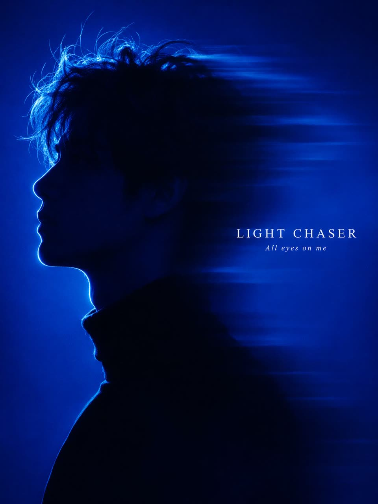

Cobalt silhouette profile: zero flesh tone, icy-cyan rim light only and horizontal shutter-drag trails, with poster type (ChatGPT image)
MOO-100MoodChatGPT (GPT Image)by @johnAGI1682026-11-23

A low-key monochrome portrait recipe: the whole figure is deep indigo and cobalt "with zero warm flesh tones", the face sinks into shadow, a razor-thin cyan rim traces the profile and multiple-exposure shutter-drag streaks trail behind the head. Ready for music, fragrance or event key art.
Prompt
A vertical 3:4 fine-art cinematic silhouette portrait — pure side profile framed on the left third, facing screen-left against a deep luminous cobalt blue aura. The character carrying identically from the attached character reference — facial bone structure, profile geometry, and identity locked from the reference. The entire subject is completely monochromatic deep indigo and cobalt blue, with zero warm flesh tones, zero peach skin, and zero yellow light across the entire figure. Extreme low-key silhouette lighting: the face, eye, and cheek are completely submerged in pure dark blue shadow, featureless and dark. Only a razor-thin, luminous icy-cyan rim light traces the sharp outer edge of the profile (forehead, nose bridge, tip, lips, chin, and throat). A soft radiant cobalt backlight glows gently from behind the head, fading into dark navy edges. Multiple-exposure rhythmic horizontal shutter drag trails and motion streaks stretch smoothly from behind the head toward screen-right. The high-neck sweater is a solid pitch-black silhouette shape with zero knit texture and zero fold highlights. Anchored on the middle-right third, delicate and small white serif typography cleanly reads "LIGHT CHASER" in fine capitals, with "All eyes on me" set in subtle serif directly below it. Captured on a 50mm cinema prime at f/1.8 — deep rich blacks, pure monochromatic blue tonality, smooth organic highlight fall-off, soft 35mm film grain. Fine-art editorial photograph, photographed not generated — no CGI, no flesh tone, no frontal face light, no visible skin pores, no beauty retouching.
Tags: ChatGPT image, silhouette, monochrome blue, rim light, shutter drag, poster typography, character reference